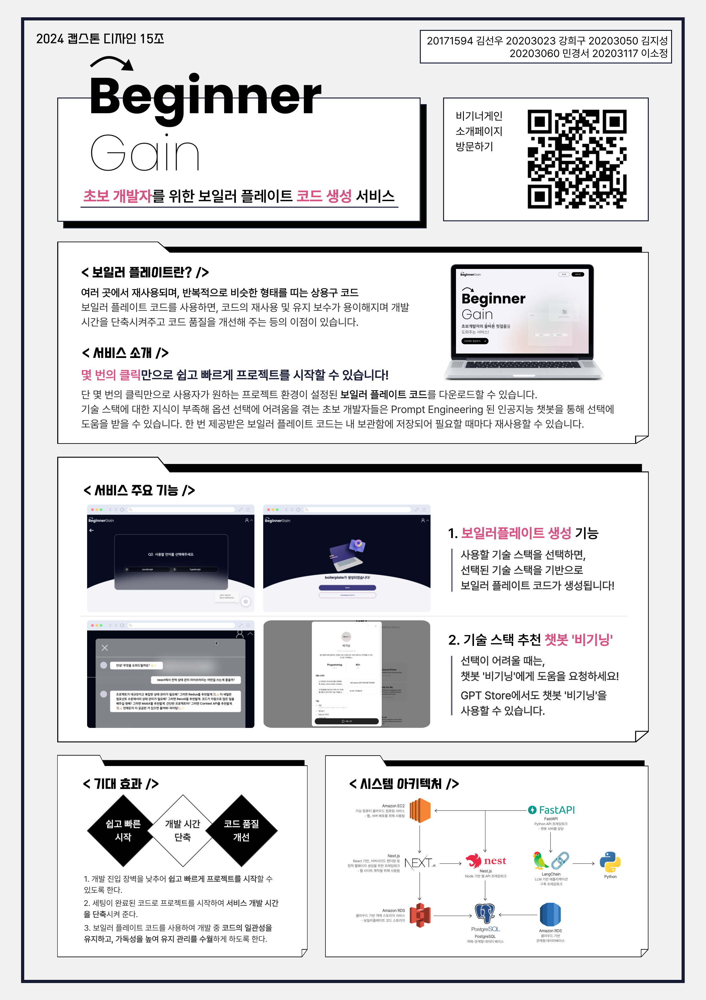

<section id="services">
<!--    <div class="container">-->
<!--        <div>-->
<!--            -->
<!--        </div>-->
<!--        <div class="row">-->
<!--            <div class="col-lg-12 text-center">-->
<!--                <h2 class="section-heading">주요 기능</h2>-->
<!--                <hr class="primary">-->
<!--            </div>-->
<!--        </div>-->
<!--    </div>-->
    <div class="container">
        
        <div>
            <div class="text-center">
                <h2 class="section-heading">주요 기능</h2>
                <hr class="primary">
            </div>
            <div class="service-container">
                <div class="service-box">
                    <i class="fa fa-4x fa-diamond wow bounceIn text-primary"></i>
                    <h3>보일러플레이트 생성 기능</h3>
                    <p class="text-muted">선택한 옵션에 맞게 보일러플레이트 코드를 생성해준다. </p>
                </div>
                <div class="service-box">
                    <i class="fa fa-4x fa-paper-plane wow bounceIn text-primary" data-wow-delay=".1s"></i>
                    <h3>라이브러리 추천 챗봇</h3>
                    <p class="text-muted">질문을 통해 사용자의 니즈를 파악하여 그의 맞는 기술스택이나 라이브러리를 제시해준다. </p>
                </div>
                <div class="service-box">
                    <i class="fa fa-4x fa-newspaper-o wow bounceIn text-primary" data-wow-delay=".2s"></i>
                    <h3>내 보일러플레이트 목록 보기</h3>
                    <p class="text-muted">사용자는 마이페이지를 통해 생성된 보일러플레이트를 확인할 수 있고 마이페이지에서 다시 다운받을 수 있다. </p>
                </div>
                <div class="service-box">
                    <i class="fa fa-4x fa-heart wow bounceIn text-primary" data-wow-delay=".3s"></i>
                    <h3>GPT Store 업로드</h3>
                    <p class="text-muted">OpenAI GPT store 에 업로드하여 전세계 사용자가 사용할 수 있다. </p>
                </div>
            </div>
        </div>
    </div>
</section>
